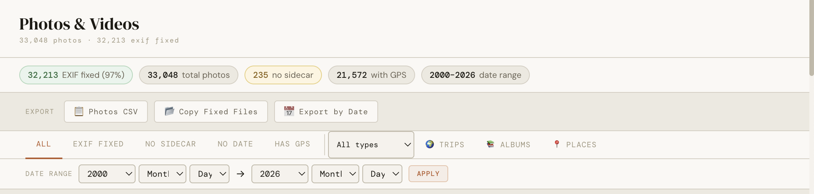

Every export option explained — what each produces and when to use it
Export options
Fossick's exports are designed for the most common things people want to do after fixing their Google Photos library. You'll find the export options in the Export menu at the top of the window, or by right-clicking a selection in the Photos & Videos view.

Photos CSV
What it produces: A spreadsheet (CSV file) listing every photo with its filename, date, GPS coordinates, status, and album membership.
When to use it: Useful if you want to audit your library in Excel or Numbers, find all photos that are missing dates, or share a list of your photos with someone.
If you have photos selected, the CSV will contain only the selected photos. If nothing is selected, it contains all photos.
Copy Fixed Files
What it produces: A folder containing copies of your selected photos, with the corrected EXIF metadata already written into each file.
When to use it: When you want to move specific photos to a new location — a NAS, external drive, or a folder for a specific project — and want the EXIF already fixed before copying.
Fossick will ask you to choose a destination folder. The copied files will be flat (all in one folder). If you want a dated folder structure, use Export by Date instead.
Export by Date
What it produces: A dated folder structure of all your fixed photos, organised as Year / Month / . For example: 2022 / August / IMG_1234.jpg.
When to use it: This is the format Apple Photos and Lightroom understand for bulk imports. Drag the exported folder into either app and your photos will be organised chronologically with correct dates from the start.
After Export by Date, open Apple Photos, go to File → Import, and choose the exported folder. All your photos will import in chronological order with correct dates. Fossick's EXIF fix means you won't see them all lumped together on today's date.
If photos are selected before choosing Export by Date, only the selected photos are exported. If nothing is selected, Fossick shows a confirmation dialog asking if you want to export all photos — useful as a reminder when you're processing your entire library.
Location GPX
What it produces: A GPX file containing your location history from Google Takeout.
When to use it: GPX is the standard format for GPS tracks, supported by mapping apps, fitness apps (Strava, Garmin Connect, AllTrails), and navigation tools. Use this if you want to visualise your location history in a third-party app or keep it as a portable backup.
Location KML
What it produces: A KML file containing your location history.
When to use it: KML is supported by Google Earth, Apple Maps, and most GIS tools. It's the format to use if you want to view your location history in Google Earth or share it with someone who uses mapping software.
Interactive Map HTML
What it produces: A self-contained HTML file that shows your location history as an interactive map. You can open it in any web browser, zoom and pan, and filter by date — with no internet connection required.
When to use it: The easiest way to share your location map with someone, or to keep a portable copy you can open anywhere without installing anything. Great as a personal keepsake — a record of everywhere you've been.